Tesis yönetimini cebinize taşıyın. Masaüstü yazılımıyla tam entegre, sahadaki her noktadan anlık veri girişi, alarm takibi ve stok analizi.
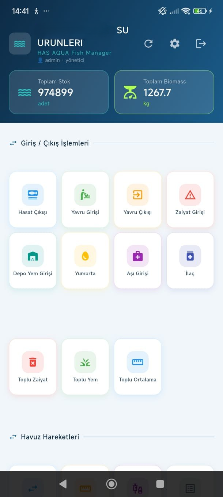
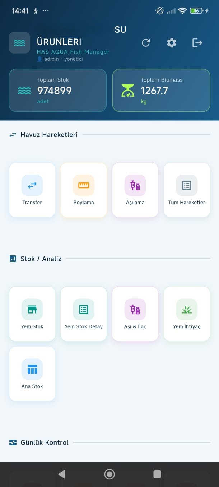
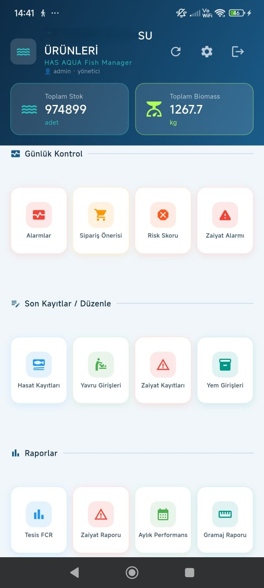
Uygulama her açılışta zaiyat artışı tespit edilen havuzları anında gösterir. Hangi havuzda ne kadar artış olduğunu görüp tek tıkla detaya ulaşabilirsiniz.
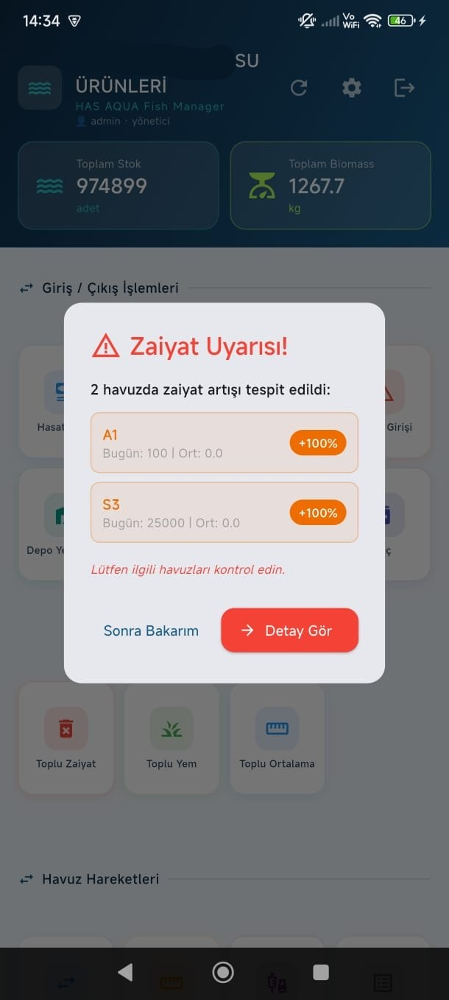
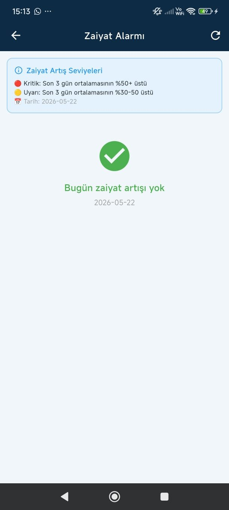
Tüm blok ve havuzların adet, ortalama gram, kg ve yoğunluk bilgilerini mobilden görün. Havuza tıklayınca günlük yem önerisi, son 30 gün özeti ve gramaj geçmişine ulaşın.
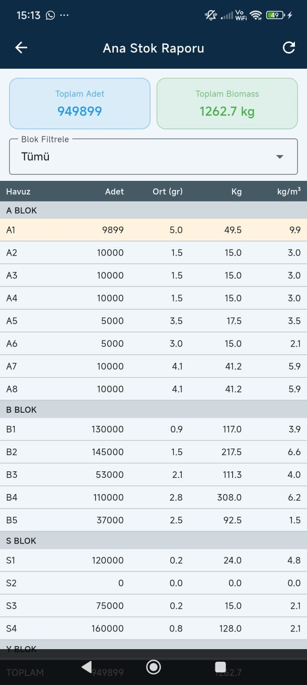
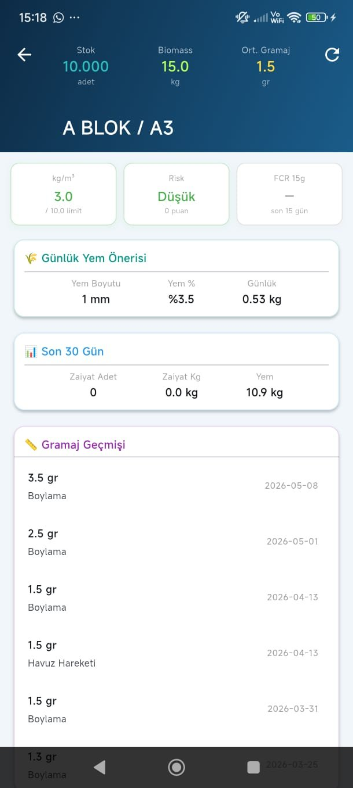
Blok seçerek tüm havuzlara yem veya zaiyat girişini tek ekranda yapın. Yem miktarı gramaja göre otomatik önerilir, siz sadece onaylarsınız.
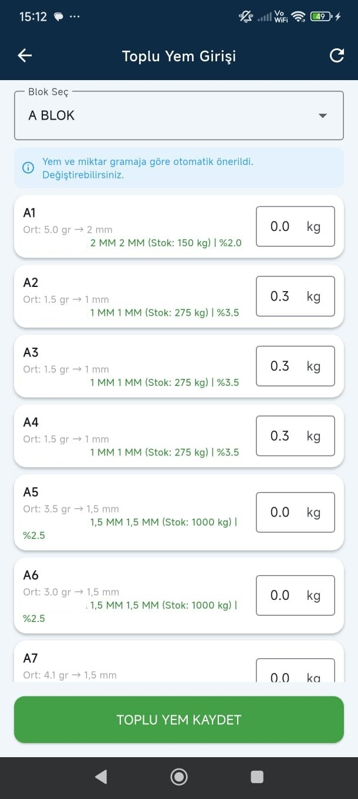
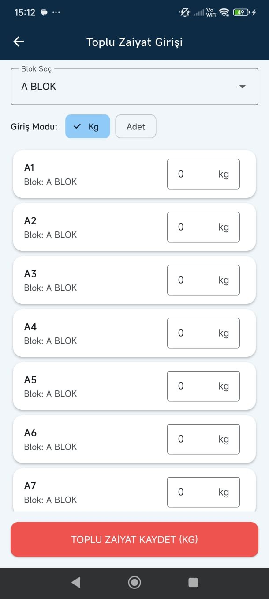
Yem stoğu kritik seviyeleri, sipariş önerileri ve zaiyat alarmlarını tek ekranda takip edin. Havuz risk skoru doluluk, zaiyat ve FCR verilerini birleştirerek her havuzu puanlar.
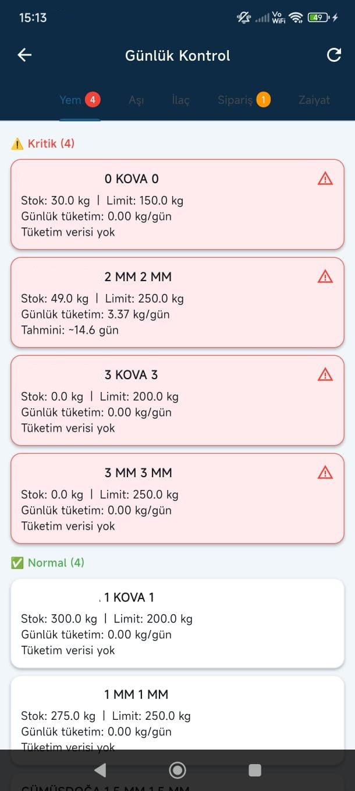
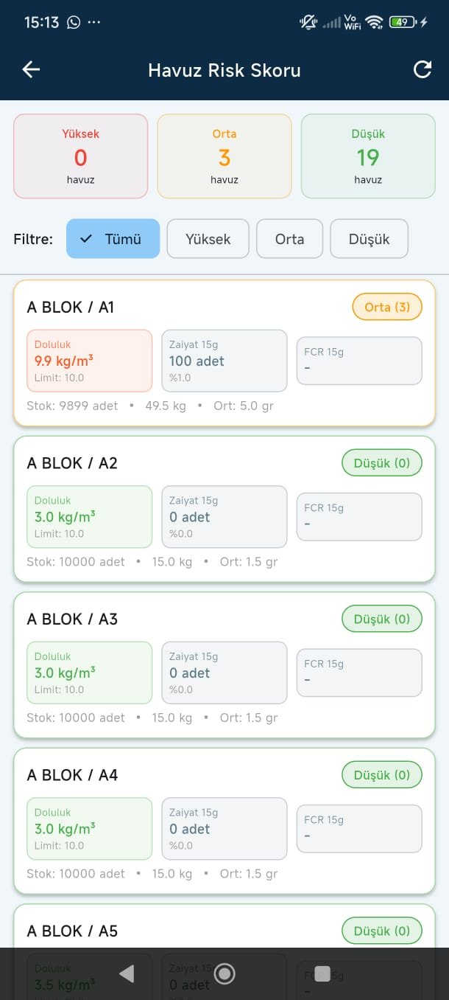
Mevcut yem stoklarını limit çubuklarıyla görün. Yem ihtiyaç tahmini ekranı, 15/30/45 günlük periyotlar için toplam ihtiyacı ve sipariş gereken yem sayısını hesaplar.
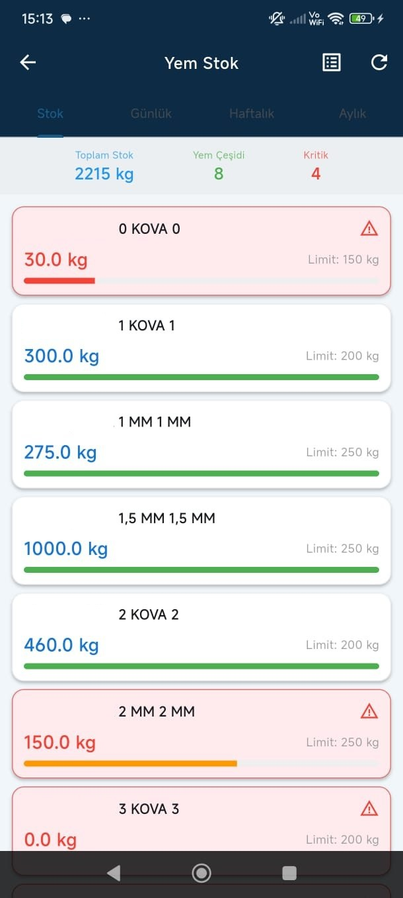
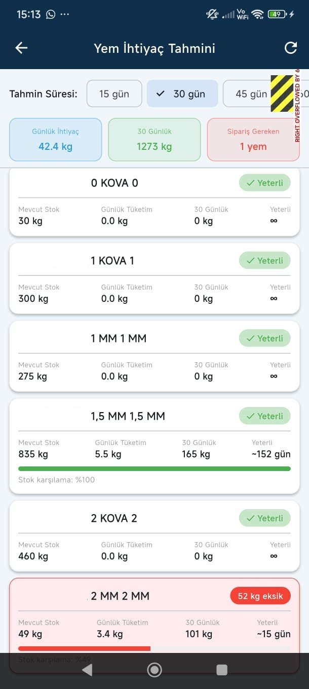
Tüketim verilerine göre otomatik sipariş önerisi alın. Transfer, boylama ve aşılama işlemlerini mobilden kaydedin, son hareketleri listede görün.
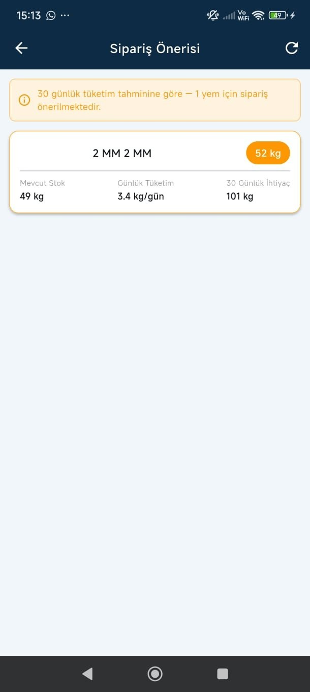
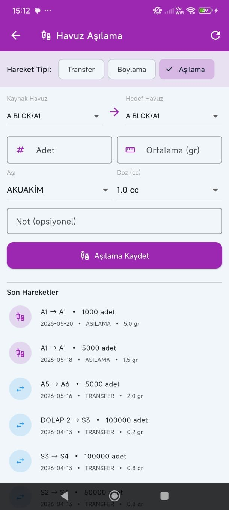
Yıllık FCR özetini ve aylık kırılımı mobilden görün. Zaiyat raporunda 7/15/30/90 günlük dönem seçerek blok ve havuz bazlı kayıpları analiz edin.
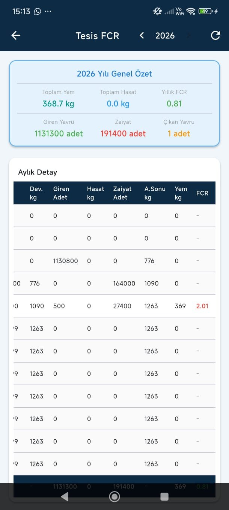
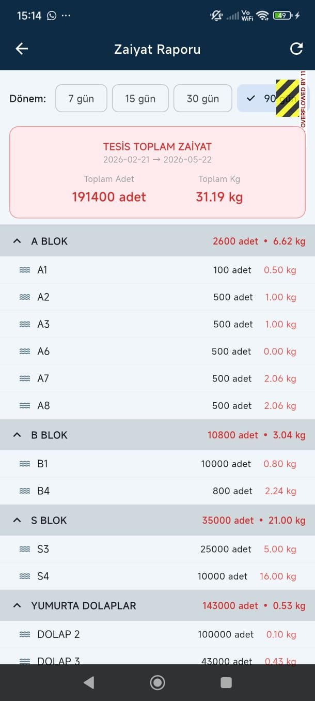
Tüm stoku gram aralıklarına göre gruplandırın. Hangi gram aralığında kaç balık olduğunu görmek için gramaj raporunu kullanın. Toplu ortalama girişiyle boylama verilerini hızlıca kaydedin.
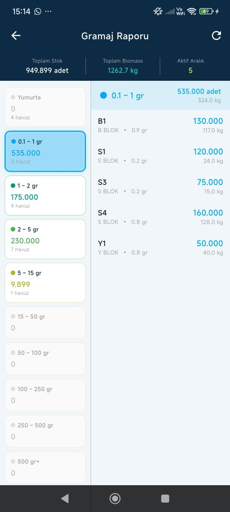
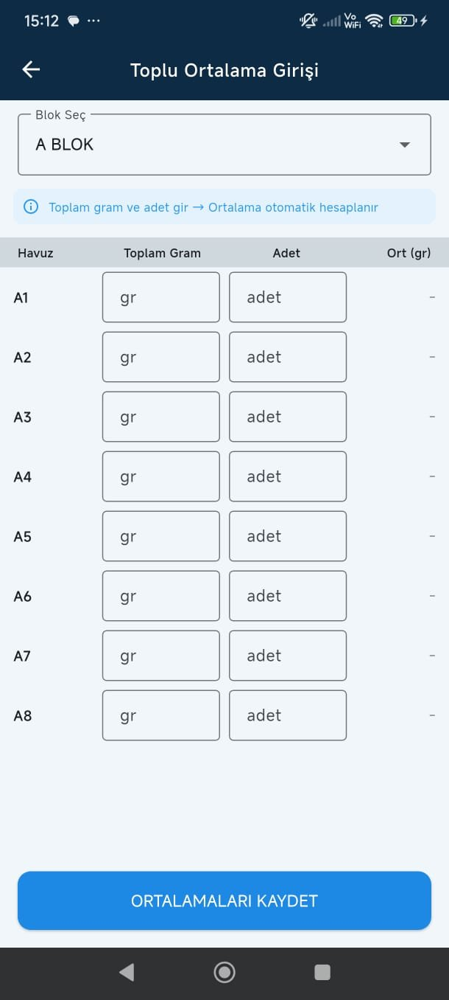
Mobil uygulamayı masaüstü yazılımına WiFi veya Cloudflare Tunnel üzerinden bağlayın. Tek tıkla veritabanını yedekleyin, son yedek tarihi ekranda görünür.
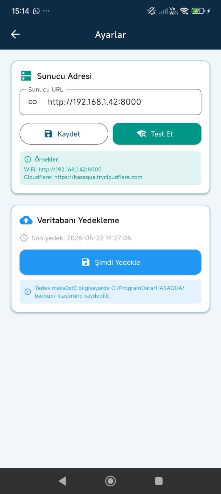
WiFi veya Cloudflare Tunnel ile masaüstü yazılımıyla anlık senkronizasyon.
Zaiyat artışı, stok alarmı ve sipariş önerileri anında bildirim olarak gelir.
Android cihazlarda sorunsuz çalışır.
Toplu yem, zaiyat ve ortalama girişi tek ekranda, minimum dokunuşla.
FCR, zaiyat, gramaj ve stok raporlarına her yerden erişim.
Cloudflare Tunnel ile internet üzerinden şifreli ve güvenli bağlantı.